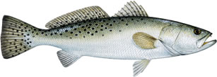
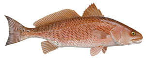
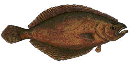

CharlestonFishingReport.Com is the perfect site to learn about the Charleston fishing experience, share your knowledge with other fishermen, and find out whats biting year round! CharlestonFishingReport.Com also provides an official monthy fishing forecast, as well as daily reports from anglers in the area. For more information on these topics, visit the links below.
Read about the predictions and learn helpful tips about the fishing during every month of the year in our official monthly forecast.
Read daily reports posted by anglers in the Charleston area and share your own knowledge on all the types of fishing that can be done in the low country.
Weather you're on vacation, or wish to gain local knowledge to improve your fishing skills, here you can find experienced fishing guides who will maximize your chances of success on the water.
If you're in need of anything from rods and reels to live bait, our local fishing stores will provide what you need to have a successful fishing trip.
  
Copyright 2019© - Site Designed by Evan Tisdale